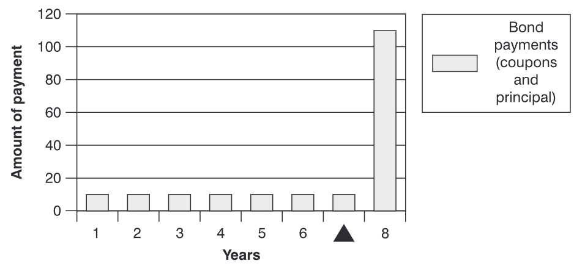
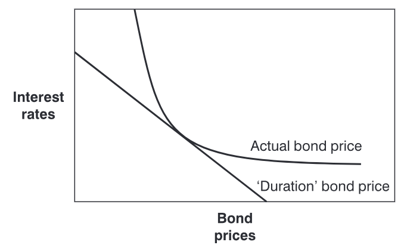

债券投资组合管理
回到目录
尽管本书的大部分内容都专注于股票投资组合管理的理论与实践，本章介绍了一些与债券投资组合管理相关的问题。首先讨论了固定收益估值的一些基本概念，然后介绍了与债券投资组合管理相关的一些风险管理技术。
债券计算
首先，回顾一些基本的债券数学。
复利计算
考虑一种情形：投资组合经理收到£9,000,000，承诺在七年后连本带息偿还，利息按14%的半年复利计算。由于利息是半年支付一次，有效年利率为：
计算七年后需偿还金额的公式为：
其中：
- ：本金
- ：到期时的总金额
- ：每年的利率
- ：投资期限（以年计）。
因此，未来的债务为：
（结果存在一定的舍入误差）。此计算结果总结如下：
- 一次性投资金额: £9,000,000
- 半年利率: 14%
- 投资期限（年）: 7
- 未来总金额: £23,206,807
债券收益率
投资的价值取决于其带来的收益。对于债券来说，最重要的收益衡量标准是收益率。债券收益率有多种计算方式，其中最简单的衡量方法是当前收益率。当前收益率表示投资带来的现金收益与债券现金价格的比率，假设价格保持不变：
票息是债券支付的利息。例如，若债券价格为£100，票息为£7，则当前收益率为7%。如果价格上升至£110，当前收益率降至6.36%。若债券价格下降至£90，当前收益率增至7.78%。虽然债券价格会变化，但票息保持不变，当前收益率与债券价格呈反比关系。
然而，当前收益率的一个缺陷是它忽略了货币的时间价值。如果投资者可以选择现在拿到£7或两年后再拿，显然会选择现在拿，因为这笔钱可以用来投资产生更多的利息。
到期收益率解决了货币时间价值的问题。债券的到期收益率实际上是使债券价格等于其现金流（票息和本金）现值的折现率。它相当于债券现金流的内部收益率（IRR）。一般而言，“收益率”指债券的到期收益率或总赎回收益率。其公式如下：
其中：
- ：第1期末支付的票息
- ：第期末支付的票息（到期时）
- ：第期末偿还的本金
- ：到期或赎回收益率。
没有简单的方法计算到期收益率。债券计算器和财务电子表格通常使用迭代法，通过不断尝试不同的值来求解正确的收益率。否则需要将数字代入公式，通过试错法得到解。
另一种方法是按每期适当的利率折现每笔现金流，然后将这些现金流的现值与当前市场价格进行比较。
年金估值
假设上例中的投资组合经理决定投资以下规格的债券：
- 债券到期时间（年）: 17
- 到期收益率: 14.49%
- 价格: 100
- 票息（每次支付）: 7%
- 购买面值: £9,000,000
为了计算七年后的资金总额（假设利率保持在14.49%），需要分两步进行：
- 计算票息的未来价值
- 计算到期时债券的价值
在七年内，投资组合经理将收到14次票息，每次票息金额为：
假设每次收到的票息以14.49%的利率存入，需计算这些资金的未来累计价值。可使用以下公式：
其中：
- ：年金的未来价值因子
- ：半年利率
- ：票息的次数。
根据已知数据，计算年金因子：
这意味着，每六个月投资£630,000，七年后将累积到：
（结果存在一定的舍入误差）。
债券估值
在七年后，债券还有十年到期。投资组合经理将出售债券以履行未来的资金承诺。可以将债券视为两部分：
- 年金：相当于未来十年的票息支付；
- 零息债券：到期时支付面值。
年金的现值因子公式为：
根据数据：
零息债券的现值公式为：
计算得：
债券在七年后剩余十年的现值为：
债券七年后的总价值为：
- 债券到期时间（年）: 17
- 到期收益率: 14.49%
- 票息（年）: 14%
- 购买面值: £9,000,000
- 七年后价值: £23,206,807.35
从上述计算可见，若利率保持在 14.49%投资组合经理正好可以满足目标。但若利率发生变化，则可能无法实现目标。该公式假设收到的票息以相同的收益率再投资。如果投资组合经理只能以较低的利率再投资票息，那么债券的总体回报将低于预期的收益率。
久期
久期（也称为麦考利久期）是衡量债券对利率变化敏感性的一种指标。然而，债券对利率变动的敏感性受到多个因素的影响。例如，期限较长的债券对利率变化的敏感性比期限较短的债券更高。对于票息较低的债券，它们对收益率的敏感性更高。票息较低的债券有更多的价值与最终的终值相关联。而对于零息债券（不支付票息的债券），其全部价值集中在最终支付上。如果收益率较高，则未来的现金流价值会较低，从而降低了敏感性。需要注意的是，票息和期限与价格之间的关系并非对称，这种关系被称为凸性，后续会详细讨论。
因此，久期是风险的综合衡量指标，实际上是债券支付（包括票息和本金）加权平均收回时间的度量。久期的值以年为单位表示。与每笔现金流相关的权重与该现金流现值的比例相关。如下图所示，三角形或平衡点表示债券的久期。

在债券组合中，会包含多种不同的债券，每种债券都有其独特的现金流结构和收益率。每种债券都有一个数学上的久期，显示其对利率变化的敏感性。债券价格与利率变化之间的关系如下图所示。

如前所述，债券价格与利率呈反向关系。这意味着当利率上升时，债券价格下降，反之亦然。下图中的直线表示价格变化的久期估计。久期假设利率与债券价格之间的关系是线性的，而实际上这种关系是曲线的。这意味着线性近似只有在利率变化非常小的情况下才准确，而当利率变化幅度较大时，线性近似会非常不准确。图中还显示，当利率下降时，债券价格的上涨幅度会大于久期计算的结果。相反，当利率上升时，债券价格的下降幅度小于久期估计的结果。因此，当利率波动较大时，具有较高凸性的债券比低凸性债券更有价值。凸性因此表示债券价格-收益率曲线的曲率，或者价格-收益率曲线斜率变化的速度。
计算久期
债券未来现金流的现值基本上是买方愿意支付的价格，其公式如下：
其中：
- ：第 时刻的现金流
- ：债券的收益率。
假设某债券每年的票息为 £12，距离到期还有 10 年。计算其久期的步骤是将未来现金流折现至现值。债券收益率为 5%。
| 年份 | 票息金额 (£) | 折现因子 | 现值 (£) | (£) |
|---|---|---|---|---|
| 1 | 12 | 0.9524 | 11.4286 | 11.4286 |
| 2 | 12 | 0.9070 | 10.8844 | 21.7687 |
| 3 | 12 | 0.8638 | 10.3661 | 31.0982 |
| 4 | 12 | 0.8227 | 9.8724 | 39.4897 |
| 5 | 12 | 0.7835 | 9.4023 | 47.0116 |
| 6 | 12 | 0.7462 | 8.9546 | 53.7275 |
| 7 | 12 | 0.7107 | 8.5282 | 59.6972 |
| 8 | 12 | 0.6768 | 8.1221 | 64.9766 |
| 9 | 12 | 0.6446 | 7.7353 | 69.6178 |
| 10 | 12 | 0.6139 | 68.7583 | 687.5828 |
| 总计 | 154.0521 | 1086.3986 | ||
| 麦考利久期 | 7.0521 | |||
| 修正久期 | 6.7163 |
修正久期与凸性
麦考利久期度量的是债券对利率变化的敏感性，而修正久期计算收益率变化对价格的影响，其公式为：
对于上述例子：
如果收益率 增加到 5.1%，则可以利用修正久期公式估算债券价格的变化：
因此，当收益率从 5.0% 上升到 5.1% 时，债券价格大约下降 £1.04。
收益率和价格之间的关系是凸性的，即非线性的。当债券价格下降时，修正久期可能高估价格变化；而当债券价格上升时，修正久期可能低估价格变化。对于收益率变化较小的情况，修正久期能提供较好的估计，但当收益率变化较大时，可能会出现误差。
投资组合久期
投资组合久期是投资组合中各债券久期的加权平均值。风险管理人员通常会为投资组合设定目标，并可能需要根据投资者的优先级降低投资组合的利率风险。
投资组合免疫
免疫策略是债券经理用来确保高概率满足承诺现金流出的一种技术。通过计算承诺流出的久期，并投资于久期相同的债券组合来实现免疫。只要久期计算正确且不存在显著的凸性调整风险，那么就能极大地减少未来无法满足资金需求的可能性。债券组合的久期简单地计算为组合中每只债券的加权平均久期。
随着利率波动，投资组合中证券的价值和这些证券产生收入的利率也会随之变化。免疫策略通过基于久期匹配资产，使投资组合能够在利率波动的情况下仍然满足其义务。当收益率上升时，卖出两年后到期的三年期债券的损失将正好被再投资于一年后到期债券的收益所抵消。反之，当收益率下降时，因投资于一年期债券而产生的损失将被两年后以溢价卖出三年期债券的收益所抵消。因此，投资组合对利率变动的影响是免疫的。
免疫策略的问题
久期不是固定不变的在利率小幅变动时，久期可能不变；但当利率大幅变动时，久期会改变，投资组合经理因此需要重新平衡投资组合以匹配新的久期。频繁的重新平衡会增加交易成本，从而可能影响收益率。而较少频率的重新平衡则可能导致久期未被充分跟踪和调整。在这种情况下，投资组合经理需要在两者之间权衡。
免疫策略在收益率曲线平坦的情况下表现最佳如果收益率曲线呈上升或下降趋势，则可能出现问题。麦考利久期的计算基于收益率曲线平行变化的假设，但现实中很少如此。短期利率往往比长期利率变化更快，因此两者之间的相关性并不总是很高。在这种情况下，久期的预测能力会受到限制。
久期能大致反映利率变化对投资组合的影响，但这一计算并不总是精确的。如果债券的凸性较高，则久期计算的准确性会降低。在极端情况下，可能需要每日重新计算久期。
现金流匹配与专用组合
针对免疫策略的问题，一种解决方案是购买零息债券，以提供与预期现金流出量完全匹配的支付。现金流匹配能自动免疫投资组合免受利率波动的影响。这种使用现金流匹配的组合称为专用组合。
专用组合的优势在于消除了利率风险，从而避免了重新平衡需求，并可能降低交易成本。然而，现金流匹配也有一些限制。例如，为了实施专用策略，可能无法只选择“低估”债券。此外，如果投资组合需要持续支付现金流（如养老金基金），那么基金需要购买期限长达数百年的证券，但这样的证券并不存在。
投资期限分析与收益率曲线策略
投资期限分析是一种考虑在固定时间期限内债券收益的策略。其假设影响债券价格的关键因素会发生变化。在这一策略中，分析师或投资组合经理会评估当前市场价格是否过高或过低。然后将债券的收益分解为：
- 假设收益率不变的情况下，由时间推移产生的收益；
- 假设没有时间推移的情况下，由收益率变化产生的收益。
在不同时间期限内考虑各种预期收益率下的备选债券收益后，投资组合可以通过交换低估债券与高估债券（债券交换）进行调整。
一种特定的期限分析策略被称为收益率曲线策略（骑乘收益率曲线）。该策略的核心是购买比满足现金流出需求所需的期限更长且收益率更高的证券，并在现金流到期时卖出以获取资本收益，前提是收益率曲线保持不变。例如，若基金经理需在三个月后支付一项负债，他可以：
- 购买三个月期票据，到期时支付负债；
- 购买六个月期票据，并在三个月后卖出，以满足负债需求。
第二种方式为投资者提供的年化回报高于第一种方式。
但该策略仅在收益率曲线呈上升趋势且未发生变化时有效。此外，由于需要买卖证券而不是持有到期，这一策略会带来更高的交易成本。
债券投资组合绩效测量
债券投资组合的绩效可以通过计算超额收益相对于相对久期的比率来衡量，其中久期被用作风险的度量。公式如下：
其中：
- 表示投资组合收益率
- 表示同期无风险收益率
- 表示投资组合久期 () 与市场久期 () 的比率
例如
| 投资组合 | 投资组合收益率 (%) | 投资组合久期（年） | 市场久期（年） |
|---|---|---|---|
| A | 10 | 16 | 8 |
| B | 8 | 8 | 8 |
假设无风险收益率 ：
- 对于投资组合 A：
- 对于投资组合 B：
从久期调整的角度来看，投资组合 B 的表现优于投资组合 A。
需要注意的是，如果投资组合的久期与市场久期相同，则不需要对超额收益进行调整。